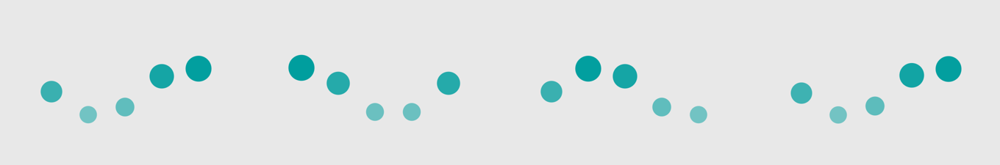
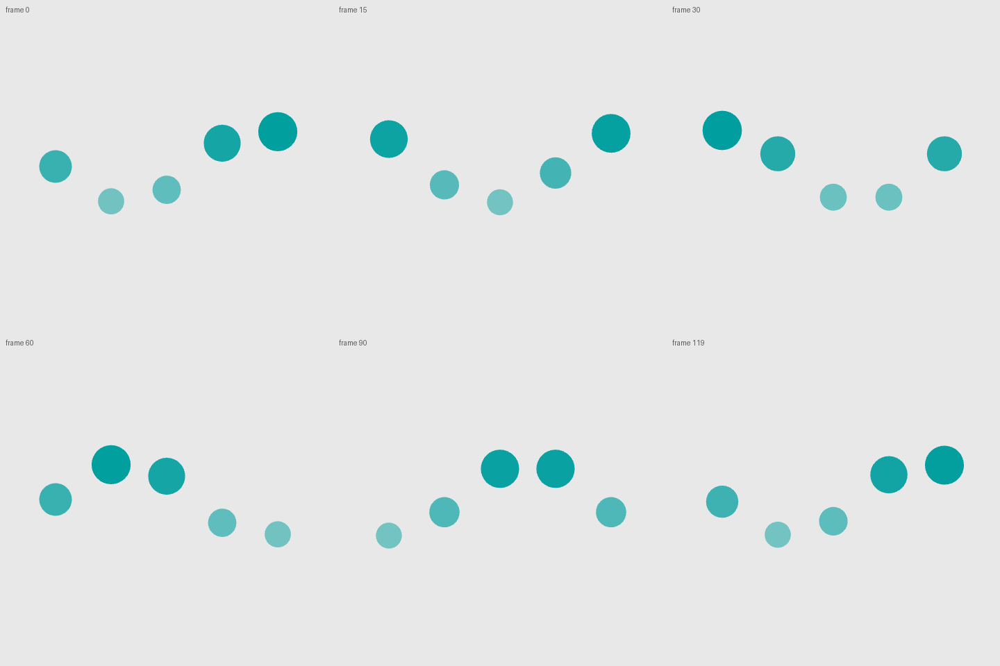
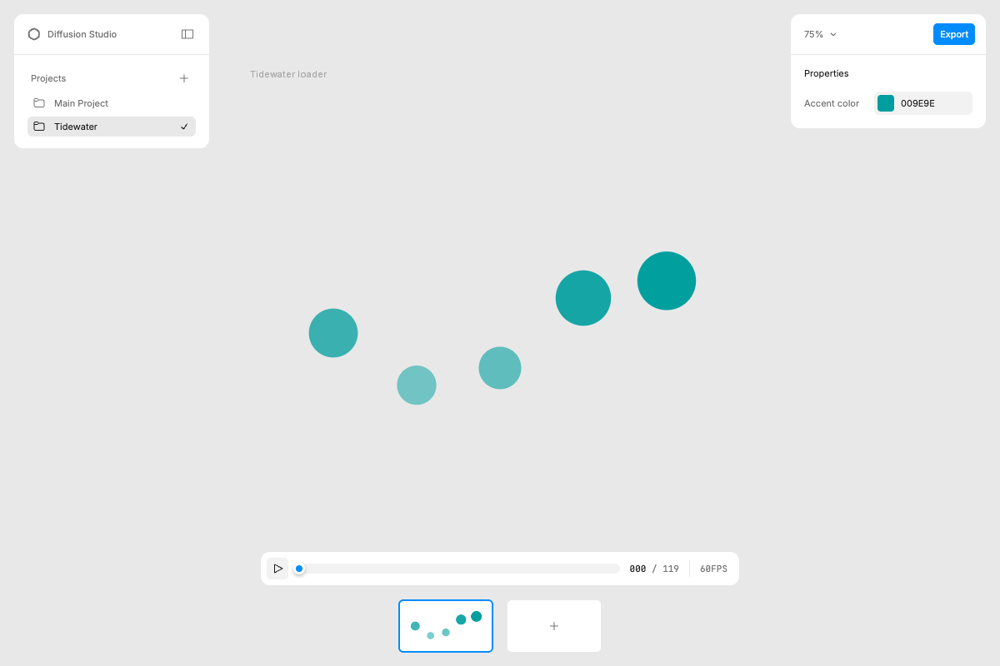

Output



Result
Delivered video-3-loader.json: a 240x240, 60 fps, 120-frame (2 s) seamless looping Lottie 'loading' animation for Tidewater. Five teal dots ride a travelling sine wave (the tide): vertical position, scale (78-118%) and opacity (50-100%) share one eased keyframe set, each dot lagging its neighbour by 24 frames. Transparent background, one accent colour exposed as slot accentColor with a controls.json label. File is 18 KB.
Verification: JSON parses; the scene appears in the official player's /__context; pinned frames 0/30/60/119 rendered in the official Skia Skottie player (canvaskit) with no console errors; as requested, the same JSON was also rendered by lottie-web in headless Chrome at frames 0/15/30/60/90/119. Both renderers show the same wave, and first-vs-last frame differences are about 0.4/255 (seamless) versus about 7/255 mid-loop. The skill says lottie-web is not an acceptable verifier on its own, so Skottie is the primary evidence and lottie-web is supplementary.
Limits: only stills were reviewed (no video capture of playback); the easing is a hand-derived soft S-curve (.45,0,.55,1), a milder variant of the skill's travel-balanced anchor chosen to read as a true sine for a continuous loop – not a verbatim anchor. The lottie.json is generated by gen/make_loader.py (shown below).
Terminal
# Routing table sends 'loader' to recipe-loaders-icons + motion-taste (+ player-contract always, spec map for JSON structure). Rules that shaped the output: transparent background, seamless 60-120 frame loop, phase-offset repeated marks, expose accent colour as a slot, derive easing from the anchors, verify frame 0 / mid / op-1 in the official Skottie player.
gh api repos/diffusionstudio/lottie/contents/skills/text-to-lottie/{SKILL.md,references/player-contract.md,recipe-loaders-icons.md,lottie-spec-map.md,motion-taste.md,design-taste.md}
fetched SKILL.md (162 lines) + 5 routed references
# The skill requires the official Skia Skottie player project; it installed fine in scratch (postinstall copies canvaskit.wasm).
npx --yes degit diffusionstudio/lottie player && cd player && npm install --no-audit --no-fund
> cloned diffusionstudio/lottie#HEAD to player
added 402 packages in 1m
public/: canvaskit.wasm mark.svg projects/
# Design: 'phase-dots' preset – five dots travel in a sine wave (the tide). 240x240, 60 fps, 120 frames (2 s), transparent background, one teal accent exposed as slot accentColor. Position, scale and opacity share keyframes; dot k lags by k*24 frames; keyframes extend beyond [0,120) so frame 0 == frame 120 by construction.
python3 gen/make_loader.py player/public/projects/tidewater/scene-1 # writes lottie.json + controls.json
wrote player/public/projects/tidewater/scene-1/lottie.json 18371 bytes
# Skill verification step 2.
node -e "const j=JSON.parse(require('fs').readFileSync('.../tidewater/scene-1/lottie.json','utf8'));console.log('valid JSON; layers',j.layers.length,'op',j.op,'fr',j.fr)"
valid JSON; layers 5 op 120 fr 60
# Scene appears in /__context (skill verification step 3).
npx vite --port 7171 --strictPort & curl -s localhost:7171/__context
VITE v7.3.7 ready in 1624 ms ➜ Local: http://localhost:7171/
{"projects":[{"slug":"main-project",...},{"slug":"tidewater","label":"Tidewater","scenes":[{"slug":"scene-1","label":"Scene 1","order":1,...}]}]}
# Official Skottie player renders it; properties panel shows the Accent color slot (009E9E). Frame 0 viewed in the full player UI.
node gen/shoot_skottie.mjs 0 30 60 119 # headless Chrome + puppeteer-core: http://localhost:7171/tidewater/scene-1?frame=N
frame 0 canvas: true
(screenshots skottie-f0/30/60/119.png; no console or page errors)
# Loop seam check: last frame (119) is nearly identical to frame 0 (<0.5/255) while mid-loop frames differ ~8x more.
PIL: mean abs pixel diff over the canvas crop between pinned Skottie frames
frame 0 vs 119: 0.463
frame 0 vs 30: 7.949
frame 0 vs 60: 7.523
# The skill itself says not to verify with lottie-web; this is an additional check, not a replacement. 120 frames @ 60 fps, all 5 layers draw in every sampled frame.
npm i lottie-web@5.12.2 ; python3 -m http.server 7172 ; node gen/shoot_lw.mjs # extra check requested by the brief: lottie-web SVG renderer in headless Chrome
lottie-web loaded: {"frames":120,"fr":60,"w":240,"h":240,"layers":5}
frame 0 svg paths: 5
frame 15 svg paths: 5
frame 30 svg paths: 5
frame 60 svg paths: 5
frame 90 svg paths: 5
frame 119 svg paths: 5
errors: ["Failed to load resource: ... 404"] (the 404 is the page's missing favicon)
# Both renderers agree: smooth seam, travelling wave, crest dot is biggest/most opaque.
PIL: lottie-web frame 0 vs 119 vs 30 (2x screenshots)
seam f0 vs f119 mean diff: 0.393 | f0 vs f30: 6.731
Files
gen/make_loader.py (generator for lottie.json)
class="s">""class="s">"Generate the Tidewater 'tide' loader: five dots in a travelling sine wave, 120-frame seamless loop @60fps."class="s">"" import json, math, sys, pathlib W = H = 240 FR, OP = 60, 120 # 2 s loop N, GAP, D = 5, 40, 24 # dots, spacing (px), diameter (px) CY, AMP = 120, 26 # baseline y and wave amplitude (px) PERIOD = OP # one wave period == loop length -> frame 0 == frame OP STEP = PERIOD // N # phase offset between neighbouring dots (24 frames) ACCENT = [0.0, 0.62, 0.62, 1.0] # teal, exposed as slot accentColor EASE = {class="s">"o": {class="s">"x": [0.45], class="s">"y": [0]}, class="s">"i": {class="s">"x": [0.55], class="s">"y": [1]}} # soft S-curve (sine-like) for a continuous loop def kf(t, s): return {class="s">"t": t, **EASE, class="s">"s": s} def dot(k): x = W / 2 + (k - (N - 1) / 2) * GAP phase = k * STEP # extrema every PERIOD/4 .. alternate crest (up) / trough (down); run beyond [0, OP] so the loop is seamless p, sc, op = [], [], [] for n in range(-4, 10): t = phase + PERIOD // 4 + n * (PERIOD // 2) # first crest at phase+30 up = (n % 2 == 0) p.append(kf(t, [x, CY - AMP if up else CY + AMP, 0])) sc.append(kf(t, [118, 118, 100] if up else [78, 78, 100])) op.append(kf(t, [100] if up else [50])) p.sort(key=lambda a: a[class="s">"t"]); sc.sort(key=lambda a: a[class="s">"t"]); op.sort(key=lambda a: a[class="s">"t"]) return { class="s">"ddd": 0, class="s">"ty": 4, class="s">"ind": k + 1, class="s">"nm": fclass="s">"dot {k + 1}", class="s">"sr": 1, class="s">"ip": 0, class="s">"op": OP, class="s">"st": 0, class="s">"bm": 0, class="s">"ks": { class="s">"o": {class="s">"a": 1, class="s">"k": op}, class="s">"r": {class="s">"a": 0, class="s">"k": 0}, class="s">"p": {class="s">"a": 1, class="s">"k": p}, class="s">"a": {class="s">"a": 0, class="s">"k": [0, 0, 0]}, class="s">"s": {class="s">"a": 1, class="s">"k": sc}, }, class="s">"shapes": [{ class="s">"ty": class="s">"gr", class="s">"nm": class="s">"dot", class="s">"it": [ {class="s">"ty": class="s">"el", class="s">"nm": class="s">"circle", class="s">"p": {class="s">"a": 0, class="s">"k": [0, 0]}, class="s">"s": {class="s">"a": 0, class="s">"k": [D, D]}}, {class="s">"ty": class="s">"fl", class="s">"nm": class="s">"fill", class="s">"o": {class="s">"a": 0, class="s">"k": 100}, class="s">"c": {class="s">"a": 0, class="s">"k": ACCENT, class="s">"sid": class="s">"accentColor"}}, {class="s">"ty": class="s">"tr", class="s">"p": {class="s">"a": 0, class="s">"k": [0, 0]}, class="s">"a": {class="s">"a": 0, class="s">"k": [0, 0]}, class="s">"s": {class="s">"a": 0, class="s">"k": [100, 100]}, class="s">"r": {class="s">"a": 0, class="s">"k": 0}, class="s">"o": {class="s">"a": 0, class="s">"k": 100}}, ], }], } doc = { class="s">"v": class="s">"5.7.0", class="s">"fr": FR, class="s">"ip": 0, class="s">"op": OP, class="s">"w": W, class="s">"h": H, class="s">"nm": class="s">"Tidewater loader", class="s">"ddd": 0, class="s">"assets": [], class="s">"slots": {class="s">"accentColor": {class="s">"p": {class="s">"a": 0, class="s">"k": ACCENT}}}, class="s">"layers": [dot(k) for k in range(N)], } controls = {class="s">"controls": [{class="s">"sid": class="s">"accentColor", class="s">"label": class="s">"Accent color"}]} out = pathlib.Path(sys.argv[1]); out.mkdir(parents=True, exist_ok=True) (out / class="s">"lottie.json").write_text(json.dumps(doc, separators=(class="s">",", class="s">":"))) (out / class="s">"controls.json").write_text(json.dumps(controls, indent=2)) print(class="s">"wrote", out / class="s">"lottie.json", (out / class="s">"lottie.json").stat().st_size, class="s">"bytes")
controls.json
{
class="s">"controls": [
{
class="s">"sid": class="s">"accentColor",
class="s">"label": class="s">"Accent color"
}
]
}